Интерфейсы
Главная
Первый экран знакомит с табло и ведёт в календарь. Ниже — ближайшие открытые гонки и пять лидеров первой попытки последней завершённой гонки. Все показатели получаются из БД.
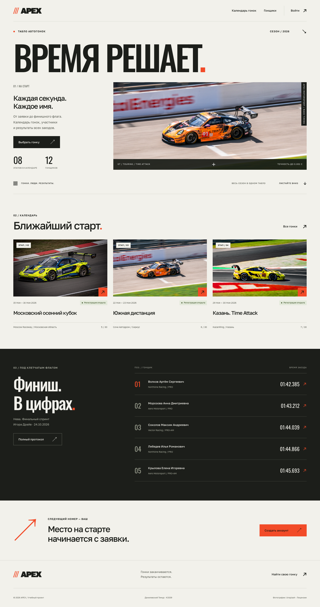
Мобильная версия
Карточки и формы перестраиваются в одну колонку. Меню раскрывается кнопкой, закрывается
повторным нажатием и клавишей Escape. Состояние сообщается через aria-expanded.
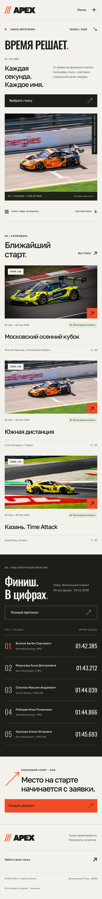
Календарь
Поиск охватывает название, трассу и место проведения; статус выбирается в списке. Переход между страницами сохраняет фильтры. Отображаются дата, статус и количество участников.
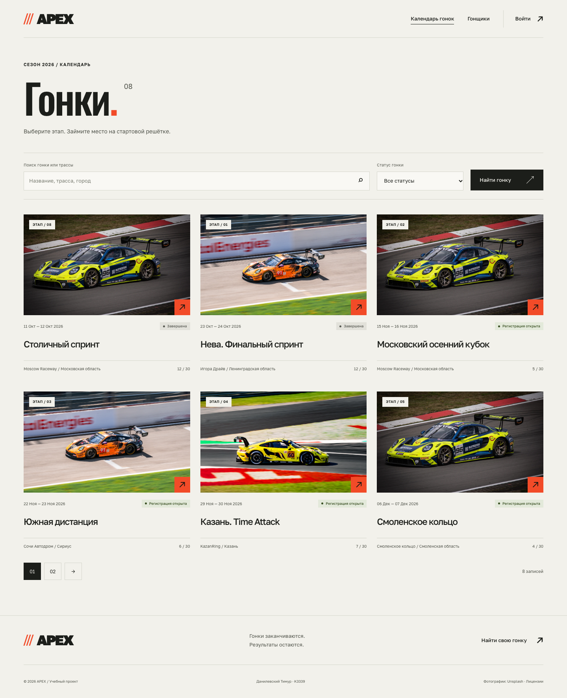
Гонка, результаты и обсуждение
Подробная страница содержит характеристики трассы, даты, кнопку подачи заявки и протокол. Каждая строка таблицы — конкретный заезд участника, а не только его лучший результат. При отсутствии результатов показывается понятное пустое состояние.
В стартовом списке видны ФИО, команда, автомобиль, биография, опыт и класс. В «Паддоке» показаны тип комментария, период заезда, оценка, текст и автор.
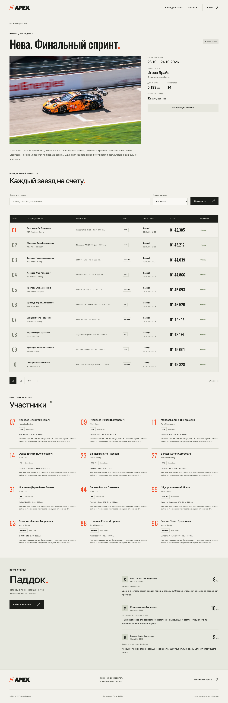
Гонщики
Карточки показывают полные сведения об участнике. Доступны поиск по ФИО, команде и автомобилю, фильтр класса и пагинация.
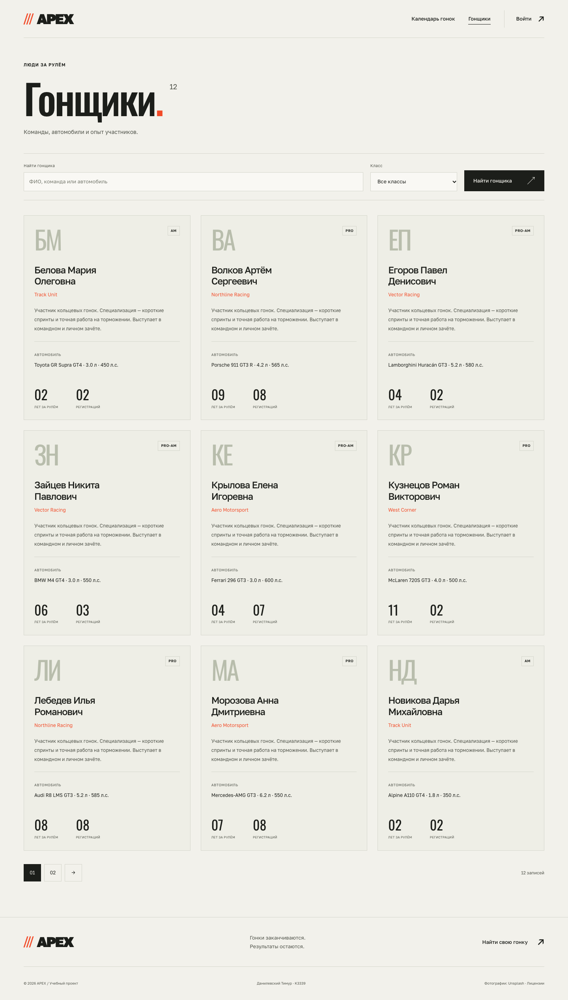
Регистрация и вход
Для аккаунта требуются ФИО, уникальный логин и два совпадающих пароля. Пароли проверяются стандартными валидаторами Django и хранятся в виде хешей. Ошибки выводятся у соответствующих полей.
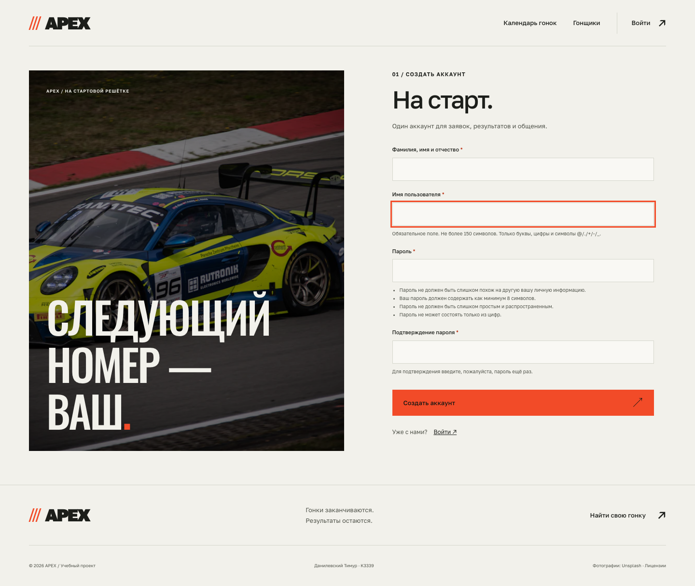
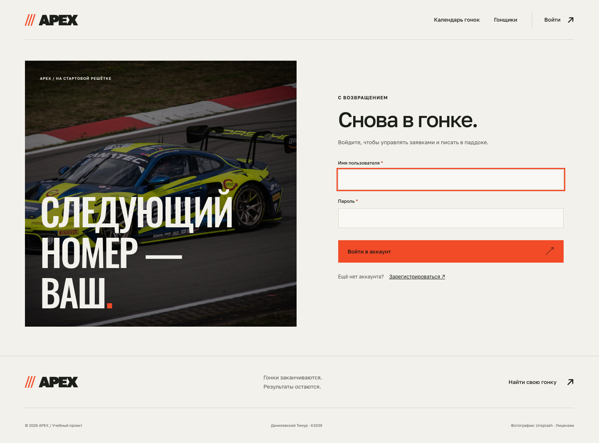
Личные заявки
Видны только собственные регистрации. Для открытой гонки доступны изменение и страница подтверждения отмены; при закрытии регистрации или наличии результатов — переход к протоколу.
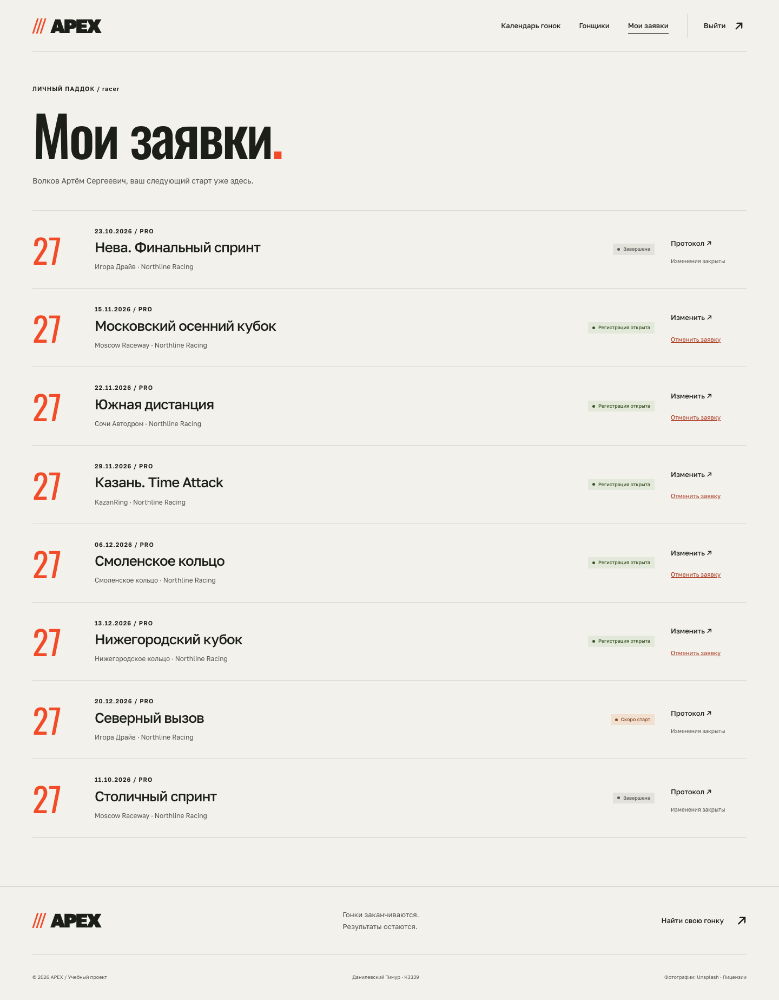
Создание и изменение заявки
Форма состоит из профиля гонщика и стартового номера. Занятый номер отклоняется. Изменение профиля отражается во всех заявках, что поясняется возле формы.
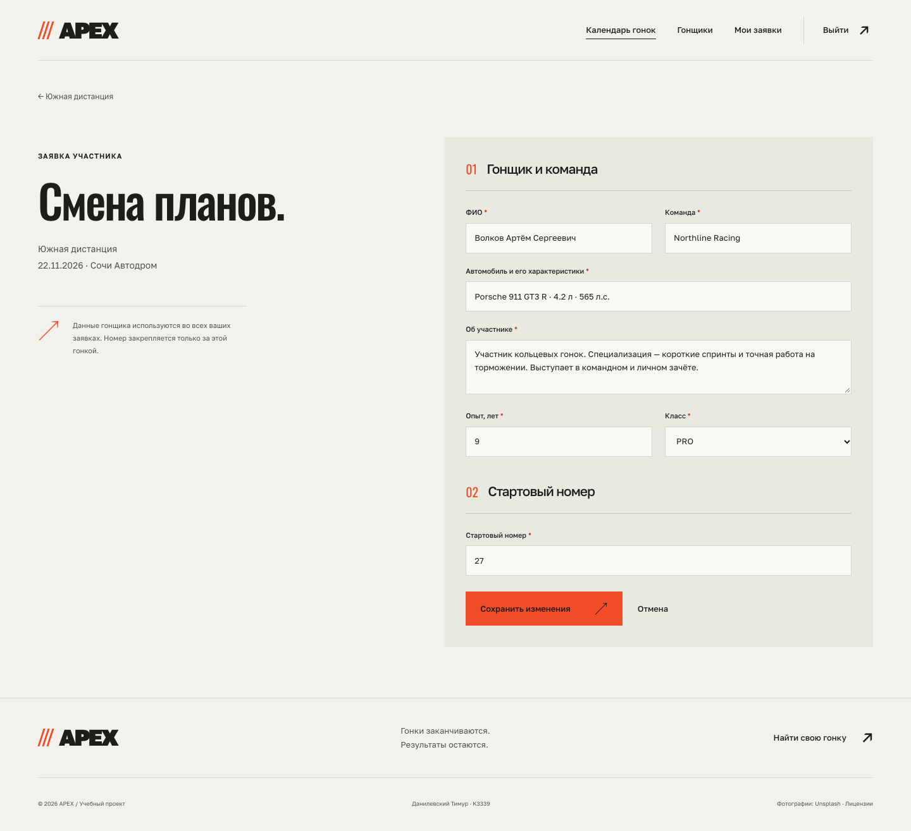
Race control
Раздел доступен только судье. В нём перечислены гонки с количеством заявок и результатов. Можно открыть протокол или добавить заезд, перейти к Django-admin.
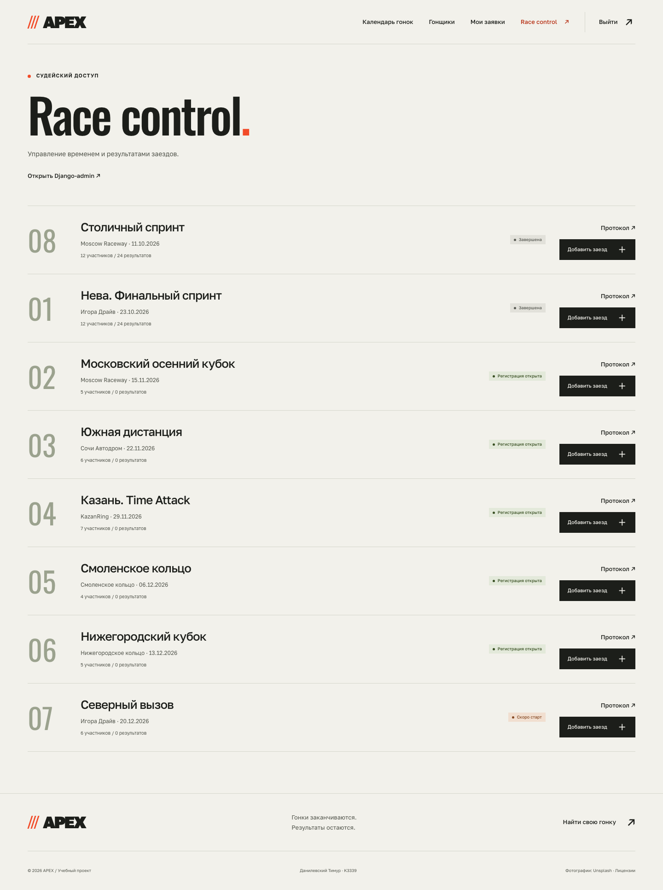
Ввод результата
Судья выбирает участника текущей гонки, номер попытки, дату и время старта, длительность, место и статус. Форма одинаково используется для создания и редактирования.
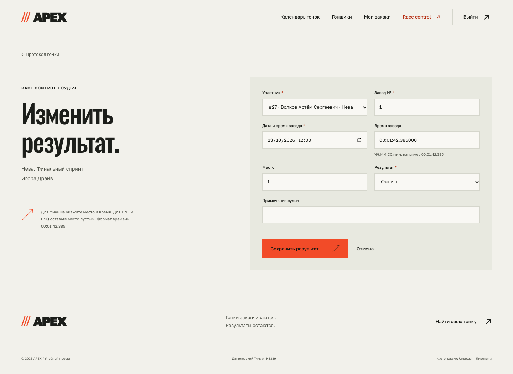
Django-admin
Стандартная административная панель содержит все пять прикладных моделей. Для заездов настроены список времени и места, поиск по гонщику и фильтры по гонке и результату.
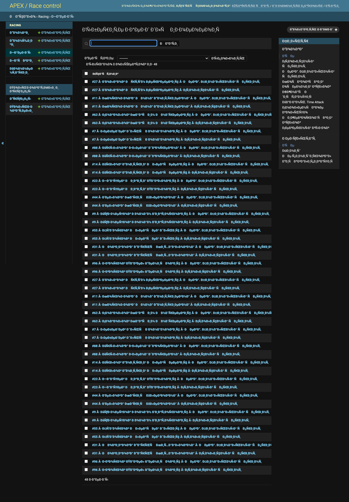
Источники иллюстраций
Собственные фотографии соревнований не предоставлялись. Использованы три лицензированные иллюстрации автоспорта с Unsplash, сохранённые локально:
| Файл | Автор | Источник |
|---|---|---|
race-orange.webp |
Boris Debusscher | Porsche GT3 на трассе |
race-yellow.webp |
Benoit Fraikin | Жёлтый GT3 |
race-blue.webp |
Rui Alves | Гоночный пелотон |
Эти кадры не выдаются за фотографии вымышленных событий. Название файла race-blue.webp
используется как технический ключ иллюстрации. Названия автомобилей и марки на фотографиях
принадлежат соответствующим правообладателям. Источники и лицензии доступны в футере сайта.